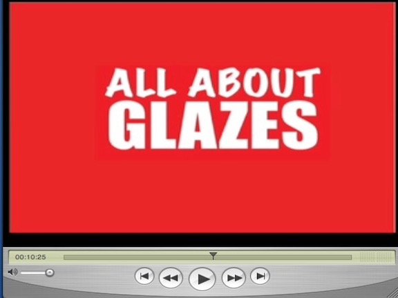
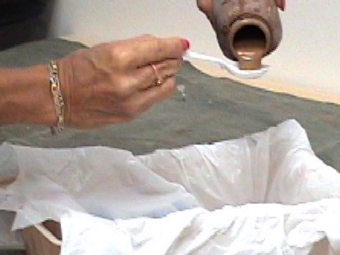
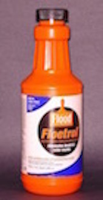
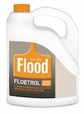

A glaze is a liquid medium that can be mixed with regular wall paint or acrylic paint. Because glaze slows down the drying time of paint, it allows time to manipulate it with various faux finishing techniques, using a sponge, rag or other faux painting tools.
Water can compromise the durability of the paint if you add too much. Glazes do not evaporate like water does. Blending colors is achieved easier because the glaze keeps the paint wet longer.

The ratio of glaze to paint is from 4 to 6 parts for 1 part paint. We recommend using 6 parts to 1 part paint to get more open time. Add 1 part glycerine to the mix to increase your open time even more.
Use a plastic spoon for measuring small amounts used for practicing. Then use a larger spoon when mixig more. Write down the ratio in case you run out and need to make more. Make a small puddle and set to the side so you can match the color to the new batch.
1) They make paint transparent so one color shows through another. The color of your base coat will affect how a color looks on top.
2) The more glaze you use, the more transparent and lighter your colors will be. The less you use, the darker, more opaque your colors will be.
5) The more glaze you use, the more open time you will have. The less glaze you use, the less open time you will have.
4) You will always use more glaze than paint. You will need only a gallon of glaze and just 16 ounces of paint to faux paint a couple of rooms.


Floetrol is formulated for wall paint and is used as a glaze. Contains 40 VOCs.

This is the official web site of the Patented (#7472450) Triple S Faux System©.Our BASIC KIT is now on sale for only $41.99 for a limited time.

Now you can learn how to faux paint 10 Techniques like Old World Parchment, Color Washing, Faux Brick, Stone, Ragging, Sponging and even how to add Clouds to ceilings.
Purchase our Basic faux painting kit, which INCLUDES Multi Color Faux Palette, 2 Poofy Pads, 2 Tuck and Gather tools and Workshop DVD. You can choose to receive a DVD or watch online with our E-DVD. Make that choice in our store drop down menu for any of out kits. We will send you a link via email to view.
Our DVD Workshop will show you step by step instructions on how to achieve all these faux finishes. Now you can easily learn how to Faux it Yourself!

We'll also send you a link via email for your FREE Color Suggestions and Idea E-book, too. This great tool will help you in deciding what technique to paint and in choosing your faux painting colors.
Dear Sandy,
Last night I used my tuck and gather tool to faux what looks a little like
snowflakes on 1 wall in my youngest son's room. It looks amazing!
Thanks again,
Wincey⭐⭐⭐⭐⭐
We have a new updated sections for our Basic Faux Painting DVD Workshop INCLUDED in the kit.